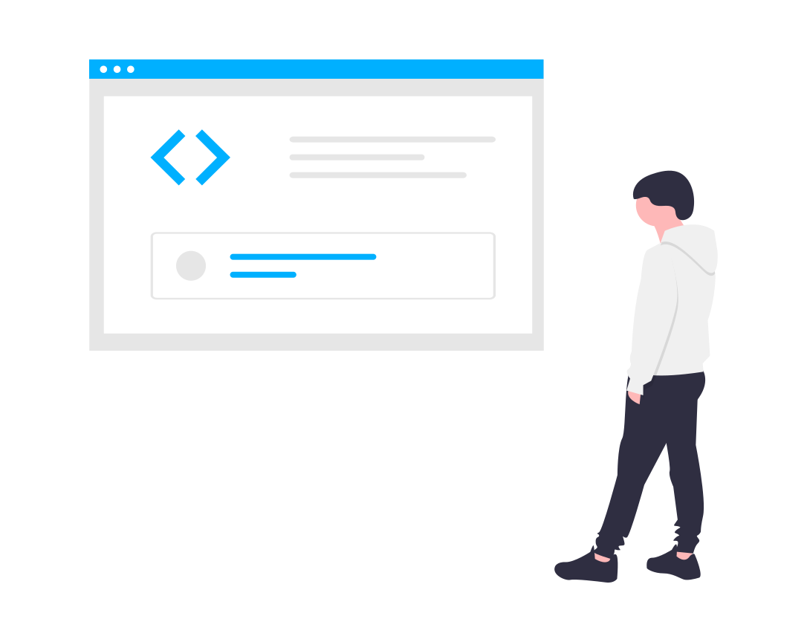

Open Source Community
Open source has become the de facto way to build software — not only in tech, but across diverse industries. As companies use open source code to build their own commercial products and services, they also see the strategic value of contributing back to those projects. There are open source you can try such Python, Open Office, Android, Linux Operation system, VLC media and so on.

We invite every one to join the open source community to built the strong environment to create and share projects and ideas. And you also open source software and source code from open souce platforms like Github, Gitlab, Bitbukket and from many other sites.

Python

Python is an interpreted, high-level, general-purpose and open source programming language. Created by Guido van Rossum and first released in 1991, Python's design philosophy emphasizes code readability with its notable use of significant whitespace. Python offers many Frameworks for Web Development and developing GUI applications. Python Web development frameworks includes Django, Web2Py, Flask, Bottle, CherryPy and GUI Frameworks includes Kivy, Tkinter, PyGUI, PyQT and many other frameworks also.
Linux
Linux is the best-known and most-used open source operating system. As an operating system, Linux is software that sits underneath all of the other software on a computer, receiving requests from those programs and relaying these requests to the computer’s hardware. Linux was created in 1991 by Linus Torvalds, a then-student at the University of Helsinki. Torvalds built Linux as a free and open source alternative to Minix, another Unix clone that was predominantly used in academic settings. There are almost six hundred Linux distributions exist, with close to five hundred out of those in active development.
Torvalds built Linux as a free and open source alternative to Minix, another Unix clone that was predominantly used in academic settings. There are almost six hundred Linux distributions exist, with close to five hundred out of those in active development.
Download
You can find many open sources projects in many platforms like Github. Here is our one of the project, a simple Text editor with multiple options.Click
 |
 |
 |